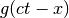
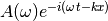
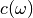
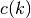
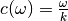
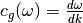
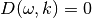

A network of neurons forms a field with the field value being the potential and every other valuable measurable quantities. With this concept set up, we could define plane waves on this network and perform linear stability analysis.
Suppose we have a wave of the form  travelling, which can be Fourier transformed into many plane waves. If the velocity of the wave doesn’t depend on the frequency of each Fourier mode, the wave would remain whatever it started as, which is non-dispersive. However, many waves are dispersive and will disperse as they travels. The reason that the waves disperse is that the velocity of each Fourier modes  is different such that different Fourier modes will seperate out due to the difference in velocity.
Thus we could find out the velocity as a function of frequency to tell how dispersive the waves are, i.e.,  or , where and  are the frequency and wave number respectively.
are the frequency and wave number respectively.
In fact the phase velocity is defined as  while group velocity is . We now established the relations between and , e.g., . The relation is dubbed as dispersion relation.
| [GErmentrout] | Mathematical Foundations of Neuroscience Chapter 6. |
© 2018, Lei Ma| GitHub| Statistical Mechanics Notebook | Index | Page Source| changelog| Created with Sphinx